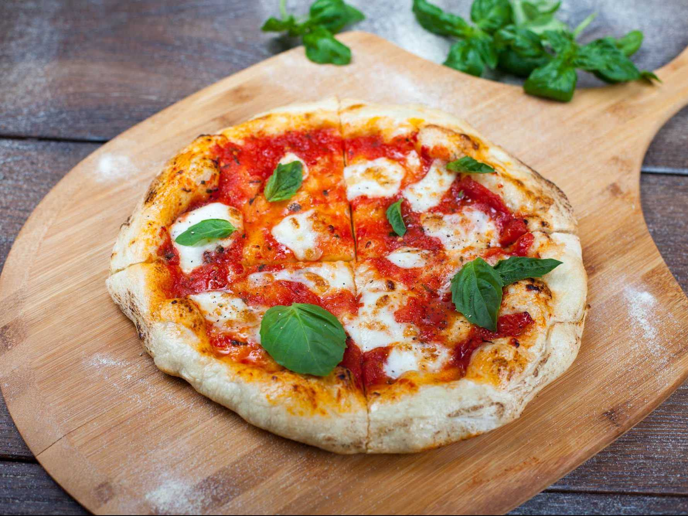

Margherita Pizza

Description
Margherita Pizza is a traditional italian dish that is enjoyed all around the world. If you have never come across this dish, ... where have you been?
Jokes aside, it is a simple, and very tasteful dish that can be found at nearly any store.
Ingredients
For the Pizza Dough:
- 1 ball of thin crust pizza dough
- Semolina flour or cornmeal, for dusting the pizza peel
For the Pizza Sauce:
- 1 small garlic clove
- 15 ounces of crushed fire roasted tomatoes or high quality organic canned tomatoes
- 1 tablespoon of extra virgin olive oil
- ½ tablespoons of dried oregano
- ½ teaspoons of kosher salt
For the Toppings:
- 1/4 to 1/3 cups of pizza sauce
- ¾ cups of shredded mozzarella cheese
- Parmesan cheese for topping
- Fresh basil leaves, for garnish
Steps
- Make the pizza dough: Follow the Best Pizza Dough recipe to prepare the dough. (This takes about 15 minutes to make and 45 minutes to rest)
- Place a pizza stone in the oven and preheat to 500°F. OR preheat your pizza oven/li>
- Make the pizza sauce: Cut the garlic into a few rough pieces. Place the garlic, tomatoes, olive oil, oregano and kosher salt in a blender. Blend until fully combined. (You will use about ⅓ cup for the pizza; reserve the remaining sauce and refrigerate for up to 1 week)
- Prepare the cheese: If using fresh mozzarella cheese, slice it into ¼ inch thick pieces (see the photos of the pre-baked pizza above). If it is incredibly watery fresh mozzarella (all brands vary), you may want to let it sit on a paper towel to remove moisture for about 15 minutes then dab the mozzarella with the paper towel to remove any additional moisture
- Bake the pizza: When the oven is ready, dust a pizza peel with cornmeal or semolina flour. (If you do not have a pizza peel, you can use a rimless baking sheet or the back of a rimmed baking sheet. But a pizza peel is well worth the investment!) Stretch the dough into a circle; see How to Stretch Pizza Dough for instructions. Then gently place the dough onto the pizza peel
- Spread a thin layer of the pizza sauce over the dough, using about ¼ to ⅓ cup. Add the mozzarella cheese. Top with a thin layer of fresh grated Parmesan cheese and a few pinches of kosher salt
- Use the pizza peel to carefully transfer the pizza onto the preheated pizza stone. Bake the pizza until the cheese and crust are nicely browned, about 5 to 7 minutes in the oven (or 1 minute in a pizza oven)
- Allow the pizza to cool for a minute or two before adding the basil on top (whole leaves, lightly torn, or thinly sliced). Slice into pieces and serve immediately
REFERENCES
Overhiser, Author: Sonja, et al. “Perfect Homemade Margherita Pizza.” A Couple Cooks, 8 Apr. 2022, https://www.acouplecooks.com/margherita-pizza-recipe/.
Return home